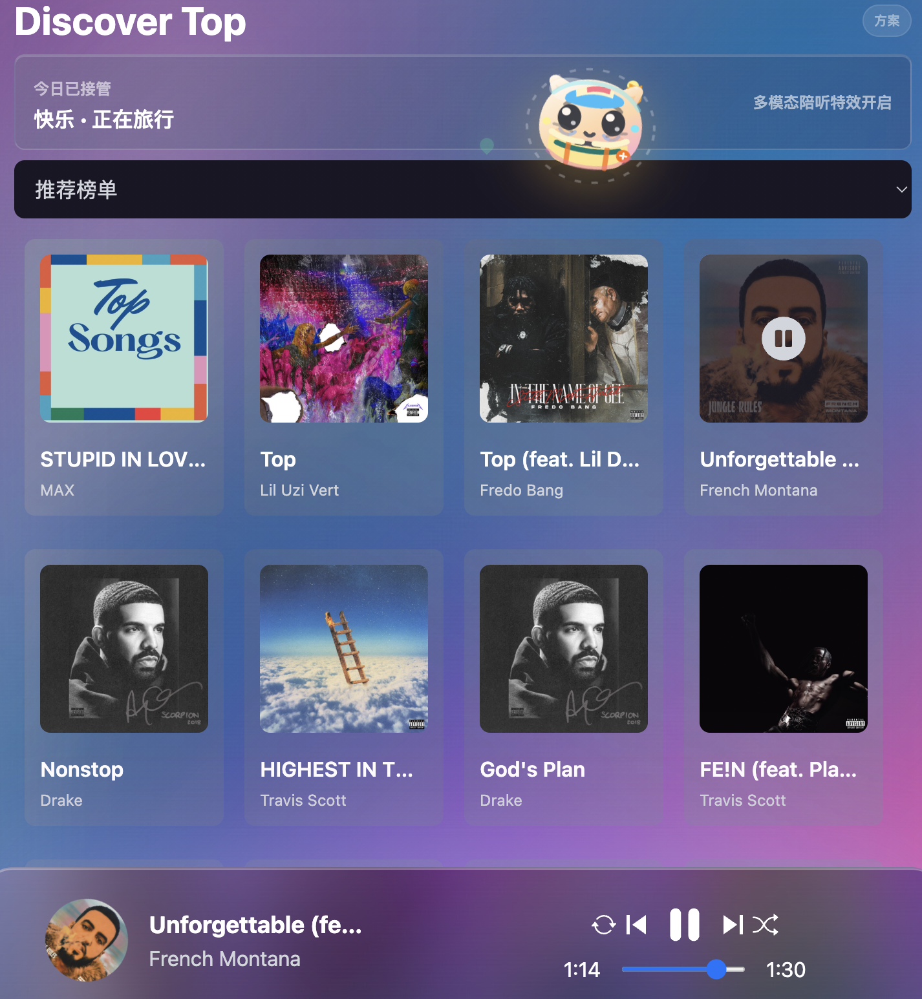
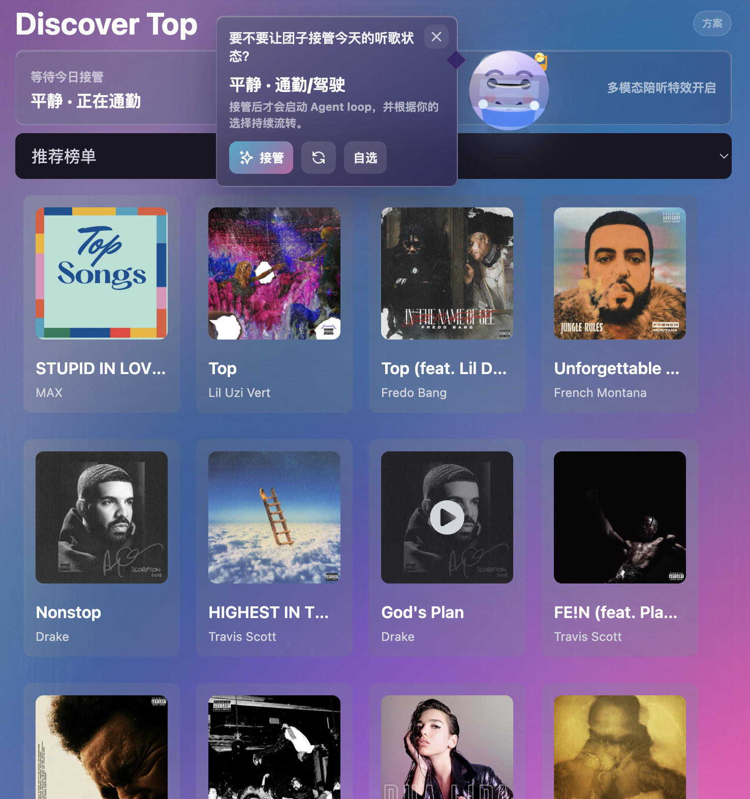

音乐发现与播放
产品保留完整音乐基础能力，包括发现页、榜单页、附近音乐、搜索、歌曲详情和底部播放器，保证情绪能力始终运行在真实音乐主链路之上。
Lyriks 产品方案 · README 同步版
情绪团子是 Lyriks 里的情绪陪伴型音乐 Agent。它不是单纯的播放器挂件，也不是重度养成游戏，而是在用户听歌、选歌、搜索、分享和停留的过程中，用一个轻量可互动的团子把“我现在想怎么听歌”变成可选择、可反馈、可积累的体验。
Tab 1 · 产品简介
传统音乐 App 更擅长围绕歌曲、榜单、歌手和推荐流组织体验，但用户打开 App 的真实动机常常不是找一首确定的歌，而是想找一种状态。情绪团子要做的，就是把这种模糊但高频的听歌动机显性承接下来。
产品保留完整音乐基础能力，包括发现页、榜单页、附近音乐、搜索、歌曲详情和底部播放器，保证情绪能力始终运行在真实音乐主链路之上。
团子承担状态展示、快捷交互和节奏响应三类职责，会根据当前情绪、播放状态和互动模式展示不同表情、动作、皮肤和特效。
状态系统强调克制表达，不诊断用户心理状态，不用强判断语气定义用户，也不强行把低落情绪扭转成开心，而是优先陪伴、承认和轻量引导。
`/play` 页面是 Lyriks 的沉浸式听歌空间。用户播放歌曲后，可以从旋转封面进入页面，看到当前歌曲封面、歌名和歌手、歌词陪伴文案、专辑/曲风/发行日期等歌曲元信息，以及情绪小游戏“雨夜补给站”。
Tab 2 · 产品效果
产品以音乐发现与播放为主线，用情绪团子把“今日该怎么听”“现在适合什么状态”“为什么推荐这首歌”串成连续体验。下面两张效果图对应首页接管建议和状态切换确认两个关键入口。

首页展示“今日接管”入口，团子以“快乐 · 正在旅行”的状态给出更贴近当下心情的听歌方向，并同步开启多模态陪听特效。

用户切换到“平静 · 通勤/驾驶”时，先看到接管确认，再进入对应听歌状态，保证状态切换始终由用户确认，不做强替用户判断。
用户可以从发现页、榜单页、搜索和歌曲详情进入播放，再由团子承接情绪状态选择、陪听反馈、推荐解释和轻互动，让“听歌”从内容消费升级为被理解、被陪伴的过程。
Tab 3 · 竞品分析
根据《三种app中陪伴小宠形象调研.docx》的文字描述，三组样本分别代表三种方向：汽水音乐把小宠物接到 AI 音乐发现入口，QQ 音乐把 AI 陪伴做成可选人物、动作和背景玩法，网易云音乐把播放页宠物与自定义生成结合。

多场景模式选择说明用户愿意用场景表达听歌需求；情绪团子可进一步把入口收敛为“先选情绪，再选状态”。


从被动推荐流到交互式音乐推荐，再到小宠物承载 AI 文案与 Assistance 入口，证明主动找歌可以被前台角色承接。

小宠物跳转 AI 音乐发现，但角色本身互动较弱；情绪团子要把入口、反馈和陪伴动作合在同一角色中。

AI 陪伴人物选择证明形象资产已经进入音乐产品，情绪团子可进一步让形象绑定情绪和推荐方向。

播放页形象验证“陪伴在场”，但固定位、不可玩、不可移动；情绪团子需要成为可操作的浮动对象。


背景玩法说明视觉资产可与播放氛围绑定，歌词背景和主题视觉可转化为团子的状态皮肤和场景套装。

播放页宠物强化“音乐状态可被看见”，但动作较固定；情绪团子要跟随节奏、情绪和用户反馈变化。

自定义生成强调个性化身份，情绪团子可以把生成结果接入听歌行为、状态皮肤和情绪推荐。
| 产品 | 重点能力 | 情绪团子的机会 |
|---|---|---|
| 汽水音乐 | 多场景模式选择、浮动小宠物、Assistance 入口、沉浸式推荐流、交互式音乐推荐。 | 保留主动找歌能力，同时让团子不仅是入口，还能表达情绪、解释推荐和承接反馈。 |
| QQ 音乐 | AI 陪伴人物选择、人物动作、音乐固定位、背景玩法、会员和装扮资产。 | 吸收人物、动作、背景资产能力，同时解决固定、不可玩、不可移动的问题。 |
| 网易云音乐 | 播放页宠物、自定义生成宠物形象、音乐情绪社区、音乐人格和状态表达。 | 把“生成一个宠物”升级为“宠物随听歌状态持续变化”。 |
| 其他参考 | 全民 K 歌可作为娱乐化角色动作参考；Spotify/Deezer 强调 mood 推荐和推荐解释。 | 简单借鉴，不作为本方案主竞品。重点仍回到中文音乐产品的播放、推荐、会员和社交场景。 |
Tab 4 · 游戏拓展
小游戏采用“轻放置 + 微节奏收集 + 情绪陪伴”的形式：用户不用一直盯着屏幕玩，听歌本身会自动掉落资源；用户想互动时，可以点一点、接一接、抱一抱小宠物，帮它把情绪能量攒起来。这样不会打断音乐 App 的主体验，而是让播放过程多一层陪伴反馈。
产品游戏拓展可以定义为“情绪能量补给站”。用户选择情绪后，小宠物进入对应状态；播放歌曲时，系统根据播放时长、节奏和当前情绪持续积累情绪能量。以 EMO 状态为例，小宠物缩在雨夜角落里，歌曲播放时掉落“歌词碎片”“雨滴音符”“共鸣光点”，用户可以帮它收集这些光点，为它加油。能量满后，小宠物不会立刻“变开心”，而是从“低电量 EMO”变成“被陪伴的 EMO”。重点不是消灭负面情绪，而是承认情绪，陪它待一会儿。
| 情绪 | 小游戏主题 | 场景关键词 | 掉落物 |
|---|---|---|---|
| EMO | 雨夜补给站 | 雨夜、月亮、小夜灯、慢速呼吸 | 雨滴音符、歌词碎片、共鸣光点 |
| 放松 | 海边漂流 | 海浪、泡泡、躺平漂流 | 泡泡、贝壳、月光 |
| 元气 | 节拍充电站 | 充电台、星星、跳跃节拍 | 星星、能量球、火花 |
| 专注 | 书桌整理 | 书桌、时钟、灵感点 | 书页、时钟碎片、灵感点 |
后续所有情绪可以复用同一套底层机制：播放触发、掉落物、能量条和宠物反馈。差异主要体现在场景主题、掉落物和奖励表达。

Tab 5 · 技术方案
Lyriks 采用“Agent + toolkit + workflow”的结构。`browser-agent`、`multiModal-agent`、`chat-agent` 负责执行与编排，不同情绪能力则沉淀为可复用的 toolkit，让情绪理解、推荐生成、陪听反馈和长期记忆都具备明确边界。
| 场景 | Agent / Toolkit | 核心输出 |
|---|---|---|
| 首页需要今日歌单推荐建议 | `browser-agent` / `todayHandover toolkit` | 根据情绪/状态，联网搜索，生成推荐歌单列表。 |
| 用户表达“今晚想安静点”或点击情绪设置 | `chat-agent` / `emotionSelection toolkit` | 一级情绪、二级动作状态和置信度。 |
| 用户希望按当前情绪听一组歌 | `chat-agent` / `playlist toolkit` | 情绪歌单旅程、阶段说明和推荐理由。 |
| 歌曲播放到高潮、歌词段落或节奏变化 | `multiModal-agent` / `multimodalEffect toolkit` | 团子动作、粒子、光效和持续时间。 |
| 用户在 EMO、低落或孤独状态停留较久 | `chat-agent` / `stamina toolkit` | 继续陪伴、温和转场或结束提示。 |
| 一段听歌会话结束，需要生成总结或分享表达 | `chat-agent` / `diary toolkit`、`socialShare toolkit` | 今日听歌日记、状态摘要、分享文案和确认动作。 |